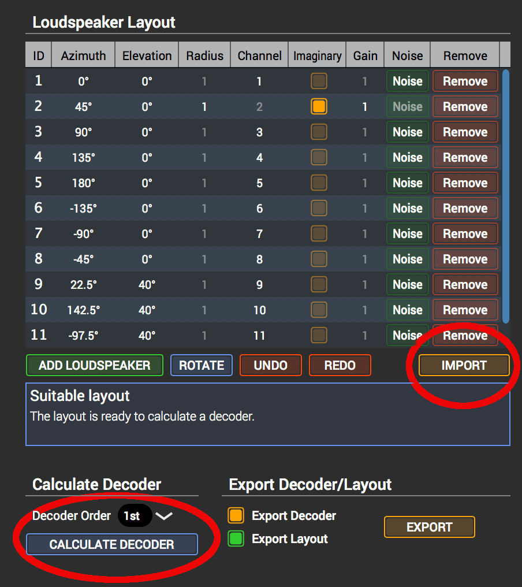

About ambisonics in studio 1D114 at KMH
General information
Scroll down to Studio 114 for specifics.
Ambisonics in KMH studios and Lilla salen
About the compiled decoders
All decoders use ACN channel order (see Component order) and SN3D normalization (see Normalisation) and are dual-band, max-rE/rV.
- A guide to the file names
For efficiency file names are composed of the following parts
- The space (for Lilla Salen this is KMHLS_AE)
- Speaker configuration (Full or Normal where the former in 108/118 and 114 means the center speaker is included, and in Lilla Salen it refers to the 45.4 setup)
- Order (e.g. 7H7P)
- Redundant speaker configuration (full, but only in certain cases for Lilla Salen)
- Finally, a number depicting the type of decoder according to the following codes:
- (1) AllRad mixed order (4/3)
Mixed order ambisonics decoder.
- (2) Decoding with the pseudo-inverse, even-energy
Pinv decoders in 1st, 3rd order with even-energy for inversion variants.
The higher order decoders in pseudo-inverse do not work well, so do not try those above 3rd order.
- (3) Decoding with the pseudo-inverse, mode-matching
Pinv decoders in 1st, 3rd order, mode-matching for inversion variants. This has been removed from the repository.
- (4) Same as (2) but with a blend coefficient for inversion variants (energy limited/mode matching 50%)
1st and 3rd and 6th order.
The higher order decoders in pseudo-inverse do not work well, so do not try those above 3rd order - though sixth order has provecd useful.
- (5) Spherical slepian decoders
SSF decoders in 1st, 3rd and 6th order (6th order is here only as VST, but I can compile the other formats if needed.)
- (6) All-round decoders
AllRAD decoders in 1st, 3rd, 5th and 7th order.
- Ouput formats
In the directory of each decoder there are four subdirectories:
- ambix: contains the decoder matrix for the ambix VST-plugin for certain settings.
- bin: contains all other decoders
- doc: documentation, a bare minimal (but a more comprehensive documentation can be built from the source, check the individual Makefiles for each compilere)
- src: the faust sources for the decoders
The binaries are prepared in six different formats:
- a jack application (start from commandline: $ KMHLS_Dome_4h3v_normal_1)
- a double clickable CoreAudio application
- a 'max' directory with Max/MSP objects (as package with help files to be put in ~/Documents/Max 7/Packages)
- a 'pd' direcory (bang left most input to get parameter names)
- a 'sc' directory with SuperCollider classes (put all .sc and .scx in ~/Library/Application Support/SuperCollider/Extensions , the supernova files are of course optional)
- an 'ambix' directory with Ambix config file
- Install on your system
You may simply move the decoders you want to use to the right locations on your system. They are compiled and ready to be used in the repository. As a convenience one may run the corresponding install scripts in the Makefile for the decoders to install them in your default directory:
- Open a terminal (such as Terminal.app)
- At the prompt type
$ cdand drag one of the directories, say 'KMHLS_AE_normal_6' of your downloaded repository onto the terminal and press enter. - Enter
$ make maxinstallat the prompt and press enter.
The last step can be made for
scinstall,vstinstallandpdinstallNote that to create a Max/MSP compatible package you may have to run maxinstall and have the reslevant dependencies resolved. Else, contact me!
- Component order
The component order for the input to the decoder follows the ACN (Ambisonics Channel Number) standard according to the table below (for third order):
0 1 2 3 4 5 6 7 8 9 10 11 12 13 13 15 Or: W Y Z X V T R S U Q O M K L N P
- Normalisation
The decoder is using SN3D normalisation. With SN3D normalisation no component will exceed the peak value of the 0th order component.
- Compiling the decoders
This is only if you wish to tweak the settings in any way. All scripts needed for the compilation is in a speparate GitHub repository that may be found here: In order to compile the decoders there are a number of dependencies that need to be resolved:
- ADT (Ambisoncs Decoder Toolkit)
- Faust
- VST SDK
- Pure Data
- Max MSP SDK
- Links to Supercollider classes
- Running Makefile scripts for ADT
Run the following for each function that needs to be compiled for lilla salen (108_all and 114_all for the studios):
$ make ls_all function=6Note that for fuction 2 & 4 only orders up to 3 are usable.
The decoding matrices end up in a directory above your current directory named 'decoders'. Move into that directory with the following command:
$ cd ../decodersWith the decoding matrices calculated the binary decoders for all orders can be compiled by
$ make -k target=all allThe target can be either of [all,sc,max,pd,vst]. Following this step the binaries can be installed (to install only one target, use that as the argument for 'target'.:
$ make -k target=install all
Studio 114
Specific info for 114
Output
Generally in ambisonics a speaker array is organized in circles. Due to the ambition to accomodate many different surround sound techniques this is not the case in Studio 114. For this reason some care needs to be taken to make sure that the right ambisonic channel is coming out of the correct speaker. There are two general version of the decoder for KMH114. KMH114_C is equal to KMH114 except that the first also includes the center speaker which may, or may not, be preferable.
Channel output mapping
In principle the output of the decoders should be mapped to the speakers according to the following table:
| Decoder output | KMH114 | KMH114_C |
|---|---|---|
| 1 | 1 (L) | 1 (L) |
| 2 | 2 (R) | 2 (R) |
| 3 | 5 (LSR) | 3 (C) |
| 4 | 6 (RSR) | 5 (LSR) |
| 5 | 7 (LSF) | 6 (RSR) |
| 6 | 8 (RSF) | 7 (LSF) |
| 7 | 9 (RL) | 8 (RSF) |
| 8 | 10 (RR) | 9 (RL) |
| 9 | 11 (ULF) | 10 (RR) |
| 10 | 12 (URF) | 11 (ULF) |
| 11 | 13 (URL) | 12 (URF) |
| 12 | 14 (URR) | 13 (URL) |
| 13 | 15 (VOG) | 14 (URR) |
| 14 | - | 15 (VOG) |
L, R, LSR, RSR, LSF, RSF, RL, RR, ULF, URF, URL, URR, VOG
Utility program
For studios 108 and 114 there is a small utitlity program that wraps your channels around. For 114, this means that you can insert KMH114_channel_map after your decoder and your channels will come out in the right order for a linear routing on the SSL (1 -> 1, 2 -> 2, etc)
Speaker positions
Speaker index is counted linearly clockwise from FL. Subs are skipped.
| ndx | azimuth | elevation | distance |
|---|---|---|---|
| 1 | 24.6 | 0 | 3.26 |
| 2 | 0 | 0 | 3.27 |
| 3 | -26.34 | 0 | 3.3 |
| 4 | -58.7 | 0 | 3.35 |
| 5 | -106 | 0 | 3.27 |
| 6 | -129.35 | 0 | 3.364 |
| 7 | 129.35 | 0 | 3.376 |
| 8 | 106 | 0 | 3.262 |
| 9 | 58.7 | 0 | 3.296 |
| 10 | 45 | 18 | 3.02 |
| 11 | -45 | 18 | 3.02 |
| 12 | -135 | 18 | 3.05 |
| 13 | 135 | 18 | 3.02 |
| 14 | 0 | 90 | 1.60 |
Spat
- Center included
A setup file for the current speaker arrangments in Studio 114 according to Speaker positions for use with the Ircam spat package.
In Max/MSP (Spat), make an object:
[spat.viewer @numspeakers 15 @showlistener 1 @viewpoint top @width 1200 @height 600]and send it the following in a message:speakers aed 24.6 12.910417 4.61 0 12.910417 4.61 -26.34 12.910417 4.61 -58.7 12.910417 4.61 -106 12.910417 4.61 -129.35 12.910417 4.61 129.35 12.910417 4.61 106 12.910417 4.61 58.7 12.910417 4.61 45 12.910417 4.61 -45 12.910417 4.61 -135 12.910417 4.61 135 12.910417 4.61 0 12.910417 4.61
IEMAllRad
- Center included
A setup file for the IEM AllRad decoder may be found in the IEM directory of the repository:
The center speaker can easily be removed from the array. Remember to re-calculate the decoding matrix if you load a new setting or change the setup (see the screenshot).

Figure 1: Click the IMPORT button to load the array, and the CALCULATE button to recalculate the decoder.